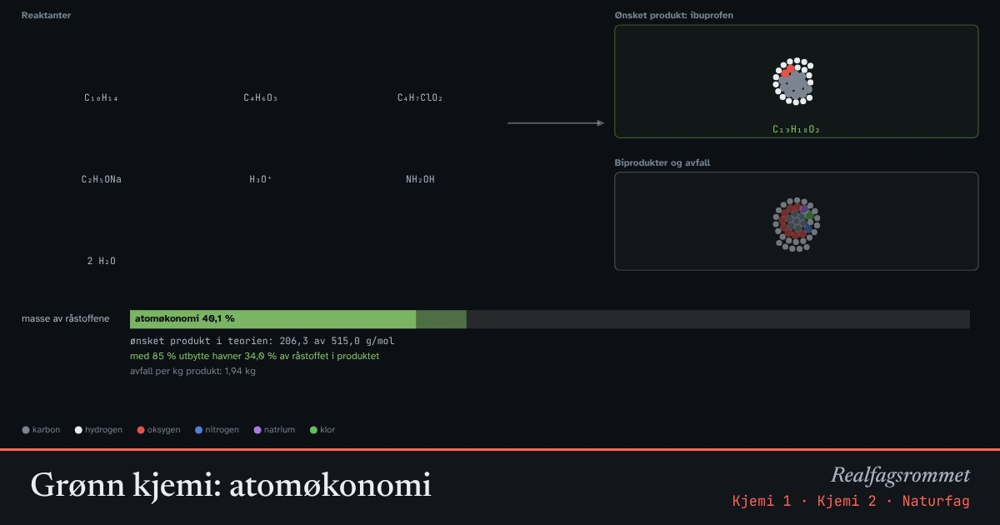

Grønn kjemi: atomøkonomi
Grønn kjemi handler om å lage stoffene vi trenger med minst mulig avfall. Atomøkonomien forteller hvor stor del av atomene i råstoffene som havner i produktet vi vil ha.
Start animasjonen
Formler
Om animasjonen
Atomøkonomi regnes ut fra den balanserte reaksjonslikningen. Ved en addisjon havner alle atomene i produktet, og atomøkonomien blir 100 %. Ved substitusjon og eliminasjon blir det alltid biprodukter.
Utbytte er hvor mye produkt du faktisk får i forhold til det som er teoretisk mulig. En reaksjon kan ha høyt utbytte og likevel lage mye avfall, hvis atomøkonomien er dårlig.
Ibuprofen ble først laget med en metode i seks trinn der bare omtrent 40 % av atomene havnet i medisinen. En nyere metode med tre trinn og katalysatorer har omtrent 77 %, og nesten alt biproduktet (eddiksyre) brukes videre.
Andre prinsipper i grønn kjemi er å bruke fornybare råstoffer, tryggere løsemidler, katalysatorer, og å spare energi.
Prøv dette
- Regn ut atomøkonomien for gjæring av glukose til etanol. Hva er biproduktet?
- Hvorfor har addisjonsreaksjoner 100 % atomøkonomi?
- Sammenlign Boots- og BHC-metoden. Hvor mye avfall blir det per kilo ibuprofen med hver av dem?
- Kan en reaksjon med 100 % atomøkonomi likevel være lite miljøvennlig? Gi eksempler.
Kompetansemål
- Kjemi 1: Grønn kjemi og bærekraft
- Kjemi 2: Synteser, utbytte og atomøkonomi
Mer om analyse, syntese og grønn kjemi
- Papirkromatografi og Rf-verdier
- Måleusikkerhet: tilfeldige og systematiske feil
- Risikovurdering og avfall på laben
Mer om klima, miljø og bærekraft
- Drivhuseffekten og jordas strålingsbalanse
- Karbonkretsløpet og CO₂ i atmosfæren
- Havforsuring: CO₂ gjør havet surere
- Klimaendringer og artenes utbredelse
- Miljøgifter hoper seg opp i næringskjeden
- Rovdyr og byttedyr
- Energistrøm og næringskjeder
- Årstider, dagslengde og solinnstråling
- Regnskygge og føhn: hvorfor Bergen er våtere enn Oslo
- Flom: regn, jord og asfalt